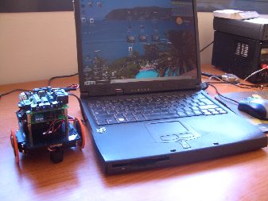
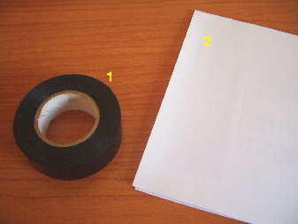
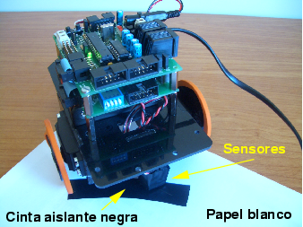

1) Skybot
2) Cable de conexión serie. Por un lado tiene un conector telefónico (RJ11) que se enchufa a la Skypic y por el otro un DB9 que va al PC
|
Taller de Robótica Básica - Skybot v1.3. - SESION 2 Probando el robot |
|
 |
Vamos a probar el funcionamiento de las partes básicas del robot, es decir, los motores y los sensores de infrarrojos CNY70. Para esta prueba vamos a necesitar un PC, el cable de conexión serie del Skybot, al menos un sensor de infrarrojos y 4 pilas tipo AA.
Para realizar la prueba es necesario que la tarjeta SKYPIC tenga grabada el programa skybot-monitor. Salvo que el usuario haya grabado otro programa la tarjeta de fabrica ya viene con dicho programa grabado, por lo que podemos seguir adelante. En caso contrario tendremos que volver a grabar el programa skybot-monitor en ella. Para ello seguir los pasos que se indican aqui.
|
|
1) Skybot 2) Cable de conexión serie. Por un lado tiene un conector telefónico (RJ11) que se enchufa a la Skypic y por el otro un DB9 que va al PC |
|
 |
1) Rollo de cinta aislante NEGRO 2) Papel blanco |
Paso 1. Conectar los sensores a probar. En este ejemplo hemos conectado uno a la entrada sensor 3 de la SKY293. El sensor 3 se encuentra en la clema de la derecha de la SKY293. En la foto y en el diagrama mostrados abajo se muestra como hacer esta conexión.
|
|
|
|
Paso 2. Conectar el robot al puerto serie del PC y alimentarlo con las 4 pilas tipo AA (+6v). La skypic tiene dos conectores telefónicos. Uno es para la conexión del ICD2 de Microchip y no se utilizará en este taller. El otro es para conectarlo al PC. Fijarse en la foto de la izquierda.
|
|
Como hemos dicho antes el robot se suministra con un pequeño programa grabado en el microcontrolador (componente principal de la SKYPIC). Este programa, llamado skybot-monitor, lo vamos a utilizar para probar el robot sin necesidad de aprender nada más. En la siguiente sesión aprenderemos a crear nuestros propios programas y a grabarlos en la tarjeta SKYPIC, o lo que es lo mismo en el microcontrolador PIC. Las fuentes del programa skybot-monitor y el fichero ya compilado lo podeis descargar de aqui.
Para hacer las
pruebas ejecutaremos un programa en el PC que se comunica con
el robot, es decir con el skybot-monitor, y nos permite moverlo y ver el estado de los sensores. Esta
aplicación depende de la plataforma que estemos utilizando:
Linux, Windows (Usuarios de MAC, seguramente os sirva la misma
aplicación que la de Linux, pero habrá que compilarla.
Desgraciadamente no tengo un MAC para probar) Los usuarios de
Windows utilizaréis el programa BotControl.
Instalarlo como se indica en la página Los usuarios de
Linux utilizaréis el programa Skybot-test.
Instalarlo como se indica en la página. Arrancar el
programa de prueba y probar a mover el robot. Colocar un papel
blanco con un trozo de cinta aislante negra y pasar el robot por
encima. Comprobar que los el valor de los sensores que se muestran
en pantalla cambian.
|
 |
A juguetear con el robot!!!!!! :-)